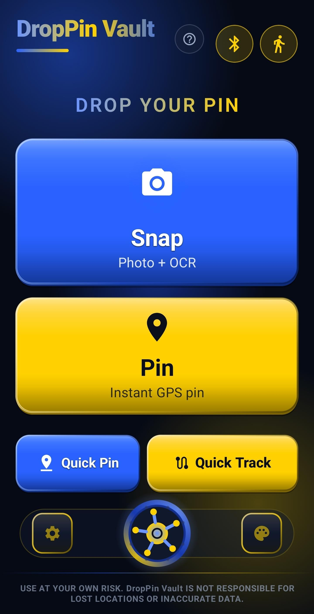

Instant Quick Pin
One tap from your home screen widget. Your exact location is saved before you've let go of your keys.
The purpose of the DropPin Vault app is to easily save, tag, and organize your favorite locations and parking spots directly on your device. Your car. Your campsite. A Shop. A Restaurant. Your favorite spot on earth. DropPin Vault pinpoints it with GPS — typically within about 10 meters under open sky, tighter or looser depending on conditions — and walks you straight back with a live compass, no map or signal required.
Free forever — no account, no subscription, no ads reading your movements.

GPS accuracy depends on sky visibility and conditions — often tighter under open sky, sometimes 10m or more near tall buildings, dense tree cover, or indoors.
No feeds, no streaks, no engagement tricks. Just the fastest way back to somewhere that matters.
One tap from your home screen widget. Your exact location is saved before you've let go of your keys.
Disconnect from your car's Bluetooth and DropPin Vault saves your spot on its own. Nothing to remember.
A live on-screen compass points you straight back — no map or data connection needed. Want turn-by-turn instead? One tap opens the spot in your phone's default maps app.
By default, saving a spot posts a live notification that stays parked in your shade — glance at it, tap it, and you're headed straight back. No need to even open the app. (Prefer things quiet? Silent saving is one tap away in Settings.)
A whole family of widgets — one-tap Quick Pin, your Favorites at a glance, tag filters, and a live tracking widget with one-tap Compass and Navigate shortcuts — so getting back to a spot never even requires opening the app.
Everything lives on your device first — no account required, no ads reading your movements. Want a safety net for a lost or broken phone? Optional backup to your own Google Drive is there when you want it, off when you don't.
DropPin Vault is an Android app for remembering where you left something — most often a parked car, but just as often a campsite, a stall at a festival, or anywhere else worth finding again. You save a spot two ways: Snap a photo of your surroundings (with automatic text recognition for things like parking level signs), or drop an instant Pin using your phone's GPS. DropPin Vault can also detect that you've parked automatically, by watching for your phone disconnecting from your car's Bluetooth, and save the spot without you doing anything at all.
By default, saving a spot posts a live notification that stays parked in your notification shade — tap it any time and you're headed back, no need to even open the app (this can be turned off in Settings for a quieter, notification-free save). Every saved spot also goes into your Vault — a searchable, taggable list on your device — plus a family of home screen widgets for one-tap access. When you're ready to head back, follow a live on-screen compass (no map data or signal required), or tap once to open the spot in your phone's default maps app for full turn-by-turn directions. That's the entire product: a fast way to mark a place, and several reliable ways to get back to it.
Everything DropPin Vault saves — locations, photos, notes, tags — is stored locally on your device by default. We don't operate a server and we can't see it.
The app optionally offers to back that data up automatically so a lost, broken, or replaced phone doesn't mean losing everything you've saved. If you turn this on, DropPin Vault requests one narrow permission — drive.appdata — which grants access to nothing but a single hidden folder inside your own Google Drive account, invisible in your normal Drive file list and inaccessible to any other app. Your backup travels directly from your device to that folder and back again if you restore it. We never receive, host, or have access to a copy of it ourselves.
Full details are in the Privacy Policy.
DropPin Vault is in final testing. Follow @DropPinVault on X — that's where launch day gets announced first.
Free forever — no account, no subscription, no ads reading your movements.